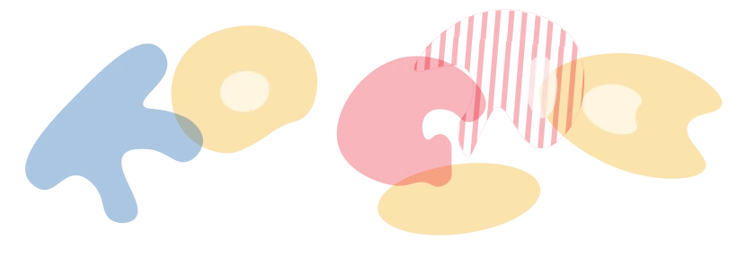

-
01
怒られないらくがき部屋
- 真っ白な部屋で、壁・床・家具すべてに
自由にお絵かきしよう！
制限や禁止はなく、好きな色やアイデアで
自分だけの世界を思いっきり楽しめる体験！ -
02
ライブパフォーマンス
- みんなが自由に描いたパネルを、
プロのアーティストが
ライブパフォーマンスで完成させます！
「自分の絵がどう変化するんだろう？」を
楽しめる参加型アートイベント。
みんなでひとつの作品をつくりあげよう！ -
03
オリジナルシール作成
- 自分で描いた絵が、シールになるよ！
できあがったシールは、おうちに持って帰れるよ！
家族や友だちに見せて、
うれしい気持ちを分けよう！ -
04
オリジナルTシャツ作成
- 自分の描いた絵をその日のうちに
Tシャツにできる体験!
オリジナルTシャツを着て楽しもう!
わたしたちは、
アートを「見る」だけでなく
「つくる」ことで、人とまちがつながっていく。
と考えています。
福岡には、アートに触れられる場所が
たくさんあります。
でも、
自分の表現を社会に届ける機会は、
まだ多くありません。
だからこそ、子どもたちの表現が、
まちにひらかれる場をわたしたちはつくります。
「未来の福岡」をテーマに生まれた作品は、
美術館やまちの中へ広がり、
日常のなかでアートと
出会うきっかけになります。
ひとりひとりの表現が、
まちを少し豊かにしていく。
そんな未来を目指しています。
大アート展を知ろう

8/30sun
福岡市美術館


- 吉永友里氏と描く
未来の福岡×西鉄バス 
- NONCHELEEE氏と描く
未来の福岡×西鉄電車 
- カラリズムリサ氏と描く
未来の福岡×福岡市営地下鉄 
- QP氏と描く未来の福岡×JR九州

- QP氏とつくる
ダンボールアート×福岡市美術館 
- 宮田ちひろ氏と描く
未来の福岡×博多駅
- 開催時間
- 10:00〜13:00
- 参加費
- 無料
- 会場
- 福岡市美術館
アートスタジオ福岡市立 城西中学校
福岡市立 舞鶴中学校
Tシャツデザイン
チャレンジ

子どもたちが思い描く
これからの福岡の姿や
こんなまちになってほしい
という想いを
自由に表現してください
- 募集期間

- 対象者
-
福岡市内
小学生〜大学生(専門学生)
access

-
8/13

-
8/14

-
8/20
福岡市美術館
アートスタジオ
〒810-0051 福岡市中央区大濠公園1-6
TEL:092-714-6051（代表）
FAX:092-714-6071
アクセス:大濠公園駅から徒歩約10分
六本松駅から徒歩約10分

-
7/26

-
8/1
福岡市立 城西中学校
〒814-0103 福岡県福岡市城南区鳥飼６丁目４−１
TEL:092-821-0938
FAX:092-852-7145
アクセス：地下鉄七隈線 別府駅から徒歩7分

-
7/28
福岡市立 舞鶴中学校
〒810-0073 福岡県福岡市中央区舞鶴2丁目6-1
TEL:092-741-4985
FAX:092-741-4986
アクセス：地下鉄空港線 赤坂駅から徒歩8分
西鉄バス「長浜二丁目」「法務局前」停留所下車